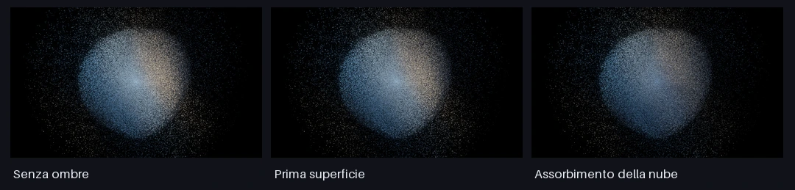

Volumi di particelle
Una nube di 150.000 granelli con una luce in orbita. Il centro attenua progressivamente la luce verso il lato opposto.
Confronto sulla stessa scena

In Scena → Ombre e caustiche alza Ombre reciproche e poi Assorbimento della nube. Nucleo e alone sono in Forma → Nucleo → Volume particellare.